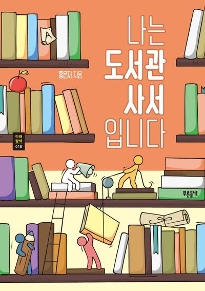

수습 도서사서님을 모집합니다
성실하게 일할 사람 찾습니다.
도서관에서 성실하게 일할 사람 찾습니다 학부와 전공은 상관없습니다 책좋아하는 사람이면 지원바람
모집 기간
: 1월 20 ~ 2월 25일
모집 분야
: 사서 일반 사무업무, 전화 상담사
지원 방버
: 양식 작성후 이메일 접수
지원서 보내시고 시간 엄수 해주세요
복지 및 해택
경조사에 따른 휴가 지급
자격증 및 여러가지 시험 비용 지원
